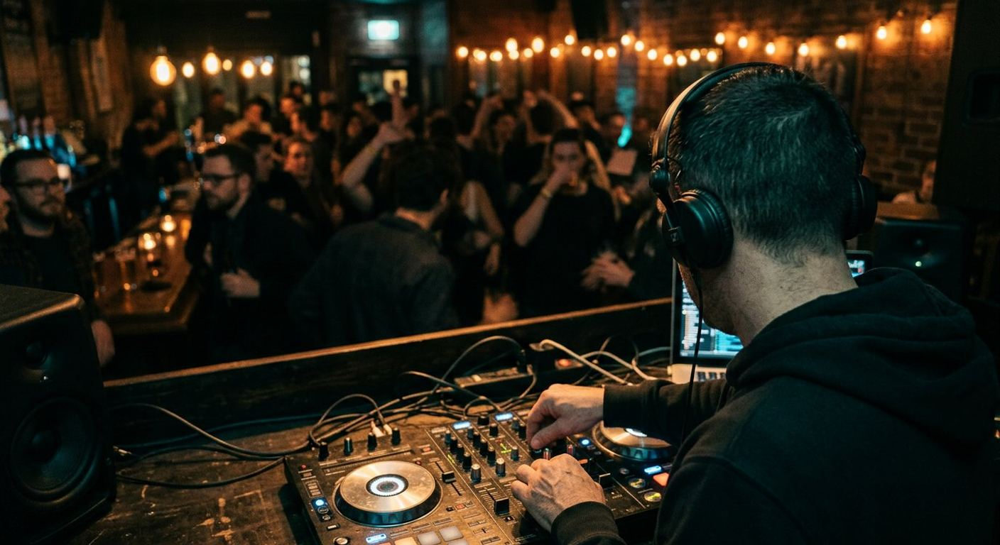

Play the right time slot
Attend a night that sounds like your mix. Learn the format, residents and booking contact; ask about a short opener or open decks, not an undefined residency.
How bookings actually happen — residencies, promoters, bars, weddings and support slots — and what to have ready before you ask anyone for one.

Disclosure: This page uses affiliate links. We may earn a commission at no extra cost to you. Full disclosure →
A first booking usually starts with a fit, not a perfect press kit. Find the room or event that suits the music you can play well, make it easy to hear what you do, and be clear about the practical details.
There is no magic rate or one-size-fits-all route. A two-hour bar set, an opening slot and a wedding reception ask different things of you. Scope the work first; price and prepare for the actual job.
Attend a night that sounds like your mix. Learn the format, residents and booking contact; ask about a short opener or open decks, not an undefined residency.
Make a relevant, low-key sample. Ask about volume, set length, music boundaries, breaks and the sound system before quoting.
Be ready to discuss the timeline, requests, announcements, microphones, travel, backup equipment and who supplies the PA.
See the wedding plan →Use a regular, clearly scoped slot to practise reading a room, meet collaborators and share consistent recordings.
Send 15–25 minutes tailored to that room, with a tracklist and a clear genre/mood. One strong, relevant link is better than a folder of unfinished sets.
Say where you play, what you play, and one useful detail. Skip claims like “guaranteed to fill a room” that you cannot prove.
Include your name, location, availability and the best way to reach you. Make the link work on a phone; no account or download should be required.
Build a full EPK only when an event, venue or festival requests photos, a longer bio, tech rider or press information. A headshot and logo are not prerequisites for an open-decks slot.
Subject: A short support set for [night] — [your name]
Hi [booker] — I’m a local [style] DJ and I enjoyed [specific detail about the night]. I’m putting together a tight [style/mood] set and would love to be considered for a 30-minute early slot or an open-decks date. Here’s a recent mix and tracklist: [link]. I’m available [dates]. Thanks, [name] · [phone/handle]
Personalize one sentence, make one ask and stop. If it’s quiet, send one polite follow-up after a week or so; then give the booker room.
Listen to recent sets, visit if you can, note the format and identify the actual organiser. Do not pitch a house mix to a drum-and-bass night just because it is nearby.
Record a clean 15–25-minute example with a tracklist. Check levels, transitions and the first 60 seconds; a booker may not listen to the whole thing.
Record a clean mix →·Tighten the transitions →Support a night you like, arrive as a guest, and learn how the room works. Do not interrupt a set or corner staff during a rush to ask for a booking.
Log the venue, contact, date, ask and next step. Follow up once, thank people who answer and keep your mix fresh. Relationships beat repeated cold DMs.
Ask for the running order, names and pronunciations, announcement notes, first-dance/special-song details and a final music deadline.
Ask which players/mixer are installed, how media is prepared, and whether you should bring a controller, laptop or prepared USBs.
Use the gig equipment checklist →“Play a full night for exposure.” Ask what the slot, audience, fee and promotion actually are. Decline if the terms do not work for you.
“Bring everything; we’ll figure it out.” Get a gear list, PA/sound responsibility and power details before agreeing.
“We’ll sort payment later.” Put the fee, overtime, cancellation and payment date in a message or agreement before the event.
After the set, invoice promptly if needed, thank the organiser, note what worked and ask permission before posting identifiable guest footage. A reliable handoff and calm communication are part of the performance.
Choose a local night that fits your sound, prepare a short relevant mix and tracklist, then send the booker a specific, low-pressure note. Open decks, community radio and support slots are useful starting points.
There is no universal rate. Price for set length, preparation, travel, equipment, event responsibility and the local market; agree the fee and payment terms in writing before you commit.
Not for most first local bookings. Start with one mix, tracklist, short bio and a contact method. Make a longer press kit if the venue or client asks for one.
A clearly scoped open-decks set or community event can be worthwhile experience. Avoid an undefined full-night booking with unpaid travel, equipment and no agreed terms.